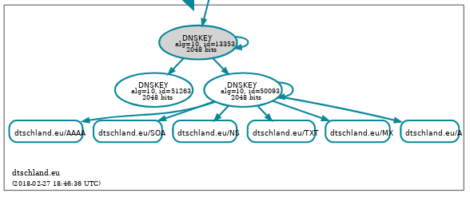
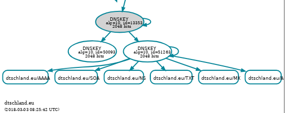
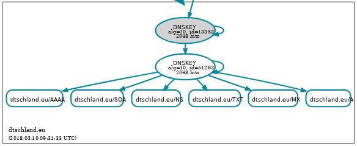
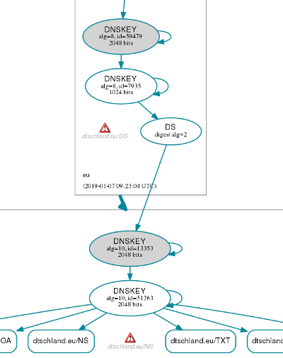
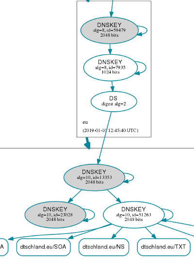
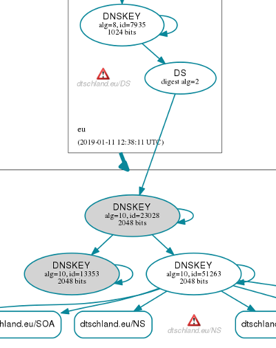
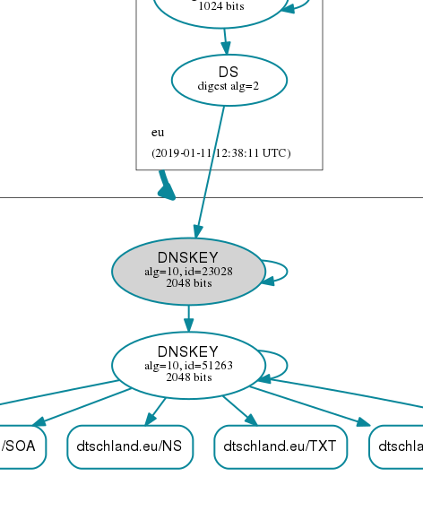

The Delphinusdnsd Handbook
Index
- Constructing a structured config file
- Creating TSIG keys
- Operating dddctl sign
- Pre-Publication Rollover Method
- Double-Signature Rollover Method
- Delphinusdnsd as a Forwarder
- Reverting back to BIND
Constructing a structured config file
In the configuration, delphinusdnsd breaks the RFC 1034/1035 protocol by syntax of the zone configuration file. We use a CSV format for storing the config file. So a minimum zone config may look like:
zone "myzone.tld" {
myzone.tld,soa,86400,ns1.myzone.tld.,hostmaster.myzone.tld.,2017083002,3600,1200,1209600,86400
myzone.tld,a,86400,172.16.0.1
}
A SOA RR should always be present. Notice the trailing .'s, in delphinusdnsd
they can be omitted or placed, it doesn't matter. It matters however that
every hostname must be expanded completely, it can't be relative to @ like in
BIND.
So how does a real running delphinusdnsd look like? Obviously a zone config
file is not the only thing that we need for configuration...
Here is an attempt at a config file (in /etc/delphinusdns/delphinusdns.conf):
; sample config file that is in production.
;
version "1";
options {
ratelimit-pps 12;
bind 127.0.0.1;
bind ::1;
port 53;
log;
dnssec;
axfrport 10053;
versionstring "delphinusdnsd-sampleconfig 20171001";
}
axfr-for {
::1/128;
127.0.0.1/32;
}
mzone "myzone.tld" {
zonename "myzone.tld";
notifydest 192.168.34.1 NOKEY;
}
include "/etc/delphinusdns/myzone.tld.signed";
As you can see the myzone.tld.signed file is "include"'ed. This is important
for a structured config. We can include the myzone.tld.signed file right in
the config file itself but there is obvious benefits to the way it is shown
here. For example when using the dddctl sign tool that comes with delphinusdns
one can only sign one zone, so it may as well be placed in a file called
"myzone.tld". A new feature came in Delphinusdnsd 1.3.0, called "zinclude".
This allows one to include only a zone config, ie. in another users path. The
zinclude prevents other configurations to be accepted, thus making inclusion
of zone files safer.
Creating TSIG keys
I usually create TSIG key's on an OS that has strong cryptographic random number generators, (like OpenBSD). Like so:$ dd if=/dev/random bs=32 count=1 | openssl enc -aThis creates a string in base64 that you can use for TSIG keys.
Operating dddctl sign
DNSSEC came to delphinusdnsd a few years ago. Our implementation is somewhat incomplete but we gotta do the best of it as we can. And as time becomes available more completeness will happen. To make delphinusdnsd zones be DNSSEC aware the option "dnssec;" must be placed in the delphinusdns config file. Also the zones will have to be "signed" with dddctl sign, in order to produce DNSKEY, RRSIG etc resource records. A delphinusdnsd with the dnssec option can also serve non-signed zones or a mix of both.
The dddctl has a built-in help. Use it.
beta$ dddctl help
usage: command [arg ...]
bindfile zonename zonefile
configtest [configfile]
help [command]
sign [-KZ] [-a algorithm] [-B bits] [-e seconds]
[-I iterations] [-i inputfile] [-k KSK] [-m mask] [-n zonename]
[-o output] [-S pid] [-s salt] [-t ttl] [-z ZSK]
sshfp hostname [-k keyfile] [-t ttl]
start [configfile]
stop
restart
We're basing this example on dddctl sign:
beta$ dddctl help sign
usage: dddctl sign [-KZ] [-a algorithm] [-B bits] [-e seconds] [-I iterations] \
[-i inputfile] [-k KSK] [-m mask] [-n zonename] [-o output] [-S pid] [-s salt] \
[-t ttl] [-z ZSK]
-K create a new KSK key.
-Z create a new ZSK key.
-a algorithm use algorithm (integer)
-B bits use number of bits (integer)
-e seconds expiry in seconds
-I iterations use (integer) NSEC3 iterations
-i inputfile use the inputfile of unsigned zone
-k KSK use provided KSK key-signing keyname
-m mask run the following masked functions
-n zonename run for zonename zone
-o output output to file, may be '-' for stdout
-S pid sign with this pid ('KSK' or 'ZSK' if used in
conjunction with [-ZK])
-s salt salt for NSEC3 (in hexadecimal)
-t ttl time-to-live for dnskey's
-z ZSK use provided ZSK zone-signing keyname
Signing a Zone
Let's look at what we must do to create 2 keys (ZSK and KSK) and sign a zone. A KSK is a key-signing key, and a ZSK is a zone-signing key, for those that need help in the basics of DNSSEC.
omega$ ls
myzone.tld run
omega$ cat run
dddctl sign -K -Z -i myzone.tld -n myzone.tld -o myzone.tld.signed
omega$ sh run
omega$ ls -clrt
total 40
-rw-r--r-- 1 pjp pjp 149 Oct 1 11:16 myzone.tld
-rw-r--r-- 1 pjp pjp 66 Oct 1 11:18 run
-rw------- 1 pjp pjp 1776 Oct 1 11:18 Kmyzone.tld.+008+50056.private
-rw-r--r-- 1 pjp pjp 602 Oct 1 11:18 Kmyzone.tld.+008+50056.key
-rw------- 1 pjp pjp 1776 Oct 1 11:18 Kmyzone.tld.+008+48846.private
-rw-r--r-- 1 pjp pjp 603 Oct 1 11:18 Kmyzone.tld.+008+48846.key
-rw-r--r-- 1 pjp pjp 3821 Oct 1 11:18 myzone.tld.signed
-rw-r--r-- 1 pjp pjp 164 Oct 1 11:18 dsset-myzone.tld.
The run file contains the dd-convert command with -Z and -K options. These
create a ZSK and a KSK respectively. As you can see one key-pair is named
Kmyzone.tld.+008+50056.private and Kmyzone.tld+008+50056.key, looking into this
file we see the following:
omega$ more Kmyzone.tld.+008+50056.key
; This is a key-signing key, keyid 50056, for myzone.tld.
; Created: 20171001091849 (Sun Oct 1 09:18:49 2017)
; Publish: 20171001091849 (Sun Oct 1 09:18:49 2017)
; Activate: 20171001091849 (Sun Oct 1 09:18:49 2017)
myzone.tld. 3600 IN DNSKEY 257 3 8 AwEAAeD5dm+18GCIR4fiI8peU4zNY3JuH7zpLemabRBF
m5gmInKz4XmlqeoUjpiXDv03vZEy39tC3Up/KHjX2nkA0uxvTIRyGXbheNfSbh+f+1Krl1kr2qSqB8k
h3OYrI5Ykf6yQz9E1B7woXgK8waK1N3zukv4l6nXqGfoHTWAr5NR9S4ofuRsOtV11SlV0fc6X+gXF+m
e4OtREd4mkf9Kle1dzmzAE6VBiaYaASPpJ4Y6UuKj+SHS0U94W0sFKeG/3IGObA+cIx4qCBgHg7b0qq
IggQFYywAsw3mEpLIz5pPbXT1iFakLsuyt1xDotuCLPWSUloHAU5pJZnK8TYqMZlhc=
So we now know that the KEY pair that has the 50056 identifier is the KSK. This
is important for the future when we re-sign the zone. The .key files can be
shared with anyone in the public, the .private keys must be kept secret as they
contain sensitive values. Sharing a .private key is like sharing the password
to DNSSEC.
We also have a myzone.tld.signed file, this is the DNSSEC zone file for the
myzone.tld zone. A dsset-myzone.tld file exists as well. This one can be
shared with the registrar or upstream zone (the one that delegates for you) as
it's the DS record.
omega$ more dsset-myzone.tld.
myzone.tld. IN DS 50056 8 1 02ACF5A6360729E8E720F2C3EC28029E0165CA2B
myzone.tld. IN DS 50056 8 2 BDC432E84E0556B85DEDA06B7845623047E2A060
566177BC4543986A0EC4BE0C
Sometimes the registrar asks you for the .key file contents (DNSKEY) of the KSK,
this is alright since the DS key can be derived from a DNSKEY record, and you're
not revealing anything. (just keep the .private key to yourself).
Once these are done, we can give it a spin. Copy the .signed zone file to /etc/delphinusdns/myzone.tld.signed and start/restart delphinusdnsd.
Re-Signing a Zone
For re-signing we need to change the "run" file by replacing the -Z and -K flags with -z Kmyzone.tld.+008+48846 and -k Kmyzone.tld.+008+50056 respectively. So it looks like this:omega$ cat run dddctl sign -z Kmyzone.tld.+008+48846 -k Kmyzone.tld.+008+50056 -i myzone.tld -n myzone.tld -o myzone.tld.signed omega$ sh run omega$ ls -lcrt total 40 -rw-r--r-- 1 pjp pjp 149 Oct 1 11:16 myzone.tld -rw------- 1 pjp pjp 1776 Oct 1 11:18 Kmyzone.tld.+008+50056.private -rw-r--r-- 1 pjp pjp 602 Oct 1 11:18 Kmyzone.tld.+008+50056.key -rw------- 1 pjp pjp 1776 Oct 1 11:18 Kmyzone.tld.+008+48846.private -rw-r--r-- 1 pjp pjp 603 Oct 1 11:18 Kmyzone.tld.+008+48846.key -rw-r--r-- 1 pjp pjp 112 Oct 1 11:41 run -rw-r--r-- 1 pjp pjp 3821 Oct 1 11:41 myzone.tld.signed -rw-r--r-- 1 pjp pjp 164 Oct 1 11:41 dsset-myzone.tld.As you can see by the ls flags that run, myzone.tld.signed and dsset-myzone.tld have changed. The dsset-myzone.tld file doesn't really change but it is re- created anew every run. Also what we didn't do is edit the SOA RR in myzone.tld to re-sign. This must be done, give it a higher sequence value. The sequence value is what we had originally called "2017083002", increasing this by one will work, or you could see that it is a date and change it to the appropriate date.
At this point the "run" file does not have to be changed again in order to re-sign. In future versions of delphinusdnsd there may be key-rollover'ing which will change the syntax minutely. But we're not there yet unfortunately. Also note that with time the private key becomes weaker, since we can't introduce a new key we're stuck with this one until the code is written. This must be mentioned.
Verifying dddctl sign
It is generally good to verify that dddctl sign is really working right. Bugs
can occur and it's wise to double-check before putting a signed zone live on
the Internet. Here is how I'd verify the zone signing:
$ dddctl sign -X -z Kcentroid.eu.+013+54670 -k Kcentroid.eu.+008+48082 \
-i centroid.eu -n centroid.eu -o centroid.eu.signed
This theoretically signs the zone centroid.eu. I then can follow up with
converting this signed zone to BIND format and runnning it through a verifying
binary.
$ dddctl bindfile centroid.eu centroid.eu.signed > centroid.bind
One such tool comes with the ldns-utils (a package in OpenBSD) called
ldns-verify-zone (a great tool, many thanks NLnetLabs!):
$ ldns-verify-zone centroid.bind
Zone is verified and complete
$ echo $?
0
$
With this you can be certain that your .signed zone file is correct and any
mistakes after this point would be in the delphinusdnsd daemon shall they
occur. There is other tools to check the logic of DNSSEC signed zones,
two others are "named-checkzone" from BIND9 and the other is
"jdnssec-verifyzone" from jdnssec-tools (a java distribution). Others may
exist but I'm not aware of them.
Pre-Publication Rollover Method
Performing a ZSK Key Rollover
Please review RFC 7583 before attempting any key rollovers.
In the last section we said that a key can't be rolled. As of 20180227 this is not true anymore (at least for ZSK). The code was written with the new dddctl utility. Basically dddctl is dd-convert with a few other functions. It introduces the -S flag which for the sign part allowing you to select which key to sign with based on the keytag (pid) to perform a pre-publish method key rollover. I have taken my test zone dtschland.eu and rolled a new ZSK into it. The screenshot from dnsviz.net looks like this after the new key was introduced:

The command to perform this was the following:
dddctl sign -z Kdtschland.eu.+010+51263 -S 50093 -a 10 -B 2048 \
-k Kdtschland.eu.+010+13353 -z Kdtschland.eu.+010+50093 -i dtschland.eu \
-n dtschland.eu -o dtschland.eu.signed
As you can see -S selects key 50093.
After waiting for the time-to-live I'm going to re-sign with the new key. This
means that I'm selecting (with -S) key 51263. It looks like so:
dddctl sign -z Kdtschland.eu.+010+51263 -S 51263 -a 10 -B 2048 \
-k Kdtschland.eu.+010+13353 -z Kdtschland.eu.+010+50093 -i dtschland.eu \
-n dtschland.eu -o dtschland.eu.signed
The dnsviz.net screenshot looks like this:

Finally the old key is discarded and this is what the final command is:
dddctl sign -z Kdtschland.eu.+010+51263 -k Kdtschland.eu.+010+13353 \
-i dtschland.eu -n dtschland.eu -o dtschland.eu.signed
We have successfully rolled the DNSSEC ZSK with the id 50093 to the new key
with the id 51263.

I'm basing the process on how to do this on RFC 6781 section 4.1.1.1 which has a Figure one which after reading this a little is straight forward.
Performing a KSK rollover
Please review RFC 7583 before attempting any key rollovers.
In the last section we did a ZSK Key rollover. As of 20190111 a KSK rollover can be done. The method for rollover is the Double-KSK Method. The procedure will be outlined here. The initial dtschland.eu (testzone) tree looks like this:

The warning here is a .eu warning that a certain nameserver did not reply. This is not in our control.
Next we initiate the following command:
dddctl sign -K -S 13353 -z Kdtschland.eu.+010+51263 \
-k Kdtschland.eu.+010+13353 -i dtschland.eu -n dtschland.eu \
-o dtschland.eu.signed -a 10 -B 2048
This creates a new KSK key of algorithm 10 and 2048 bits. It's pid is 23028,
which is shown when you execute the command. -S is needed here, but that
could be a bug. Make sure the algorithm and the
bits don't deviate from the KSK key you're replacing. This is called an
algorithm rollover and we're not supported for that yet. You reload the
delphinusdnsd after installing the .signed zonefile, now you must wait for
TTL of the DS (usually 1 day), in the meantime the dnsviz looks like this:

After 1 day you return to the zone, this time you approach your registrar with the new DS or DNSKEY information (key pid is 23028 that needs to be replaced from pid 13353). After doing this you wait until the registrar has updated the DS key at the top level domain (.eu in this case, next to instant). The dnsviz now looks like this:

Notice the warning, which was OK since it warned that EURid nameservers didn't reply at some IP. Your KSK is now rolled. Keep the 13353 key around in your zone for another TTL of DS. You have to wait for another day to do this next step.
After the TTL of 86400 seconds (1 day), proceed with this command:
dddctl sign -z Kdtschland.eu.+010+51263 -k Kdtschland.eu.+010+23028 \
-i dtschland.eu -n dtschland.eu -o dtschland.eu.signed
Go ahead and restart your delphinusdnsd with this new zonefile. When this is
done the dnsviz looks like this:

Your KSK is safely rolled. It should not have impacted services.
Double-Signature Rollover Method
The Double-Signature Rollover method came after April 2nd, 2020. A series of tests will be performed and I'll fill in the blanks here.
Performing a ZSK Key Rollover
We will start off by reviewing section 3.2.2 of RFC 7583,
This is a work in progress, please be patient for up to a few years.
Performing a KSK Key Rollover
...
Performing an Algorithm Rollover
The recommended way for this is to go un-signed for a short time while changing the key. (I know this can be bad). Apparently not all recursive nameservers (resolvers) out there do support Algorithm rollovers.
Delphinusdnsd as a Forwarder
In version 1.5.0 and onwards delphinusdnsd supports forwarding. I have set
this up in such a way that it is harmonious with unwind with OpenBSD. Here
is how my setup looks like.
+-------------------------+ +------------------------------+
| OpenBSD unwind | | OpenBSD unbound |
+-----------v-------------+ +------------^-----------------+
| Delphinusdnsd forwarder | <--- Internet ---> | Delphinusdnsd forwarder (nc) |
+-------------------------+ +------------------------------+
The unwind side forwarder has the following forward config:
forward {
incoming-tsig no;
cache yes;
destination 5.9.87.75 port 8053 key nusecret;
destination 168.119.124.130 port 8053 key nusecret;
}
Here you can see that it uses a cache, has no incoming tsig (for unwind),
and uses the tsig key nusecret at the destinations port 8053. The key
nusecret must be configured (see delphinusdns.conf(5) manpage).
The unbound side forwarder has the following forward config:
forward {
incoming-tsig yes;
destination 127.0.0.1 port 5353 key NOKEY;
destination ::1 port 5353 key NOKEY;
strictx20 no;
}
Here you can see it uses incoming tsig where it will only answer to
authenticated requests (must have key nusecret configured). It will then
forward to unbound which is bound on localhost at port 5353. NOKEY means
that there is no tsig key required. The use of strictx20 is needed in my
setup since unbound passes along answers untranslated for vixie's x20 method
which I have adopted in this implementation. strictx20 no, will not care
about the casing returned.
That's how I tested the forwarding code. In theory it should also be able to forward to a recursive nameserver that's listening with port 53. Due to some constraints in my setup I wasn't able to test this.
Reverting back to BIND
Unfortunately delphinusdnsd is not complete. For those that wander to us and run it, and then realise they need a certain feature there is a way to go back.
As of May 12th, 2018 there is two ways one can revert the zone file back to a BIND format. The recent "dddctl bindfile" method is the preferred way. Should this way have programming bugs and can't restore a BIND zone file there is the dig with AXFR method.
With dddctl the syntax is "dddctl bindfile domainname zonefile" and the output is on stdout. This method has been used in regression to check for anomalies with other DNS software verification tools.
In dig you can convert a delphinusdnsd config file to BIND format, just make an AXFR transfer and modify it by taking out the trailing SOA record. You now have a BIND config file.
As a last word, we were built with our own goals in mind not others, hence you may find something that you don't like perhaps, and now you can revert.